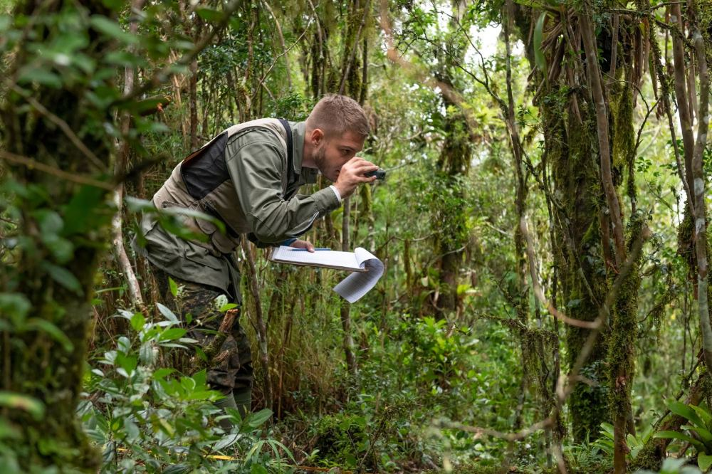
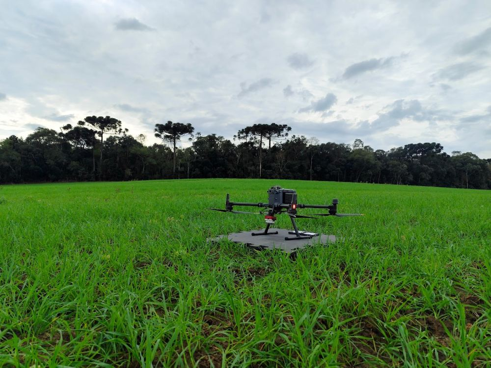
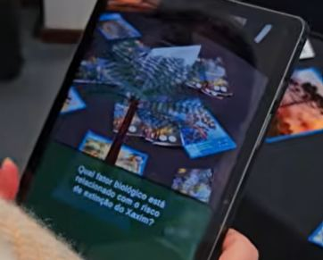

Forest and Floristic Inventory of Santa Catarina
The forests of Santa Catarina, measured and monitored since 2007
FlorestaSC monitors the composition, diversity and development of the forests of Santa Catarina, providing information for public policies on forest use and conservation, land management and ecological-economic zoning.
What are you looking for?
Search the whole site or go straight to what you need.
500sample plots systematically distributed across the state
3 cyclesof field measurements: 2007–2011, 2014–2019 and the third, being completed in 2026
2,871species of the Santa Catarina flora recorded
2007start of data collection
What we do
Three lines of work
Periodic field surveys, remote-sensing monitoring of forest cover, and science outreach with forest education.

Forest inventory
Survey and monitoring of tree species diversity and biomass stocks in the forests of Santa Catarina.
Learn more →
Mapping
Maps of forest cover and other land uses, produced with GIS and remote sensing.
Learn more →
Forest education
Science outreach and environmental education to value forests, especially with schools.
Learn more →Stay up to date
All news →News

22 July 2026
4th FlorestaSC Seminar presents the results of its latest research

19 May 2026
FlorestaSC virtual reality apps: an innovation for forest education

10 March 2026
FlorestaSC: the strategy that revealed 2,871 species of the Santa Catarina flora

18 December 2025
2025 field season completed!
Publications
All publications →Featured reading
Book